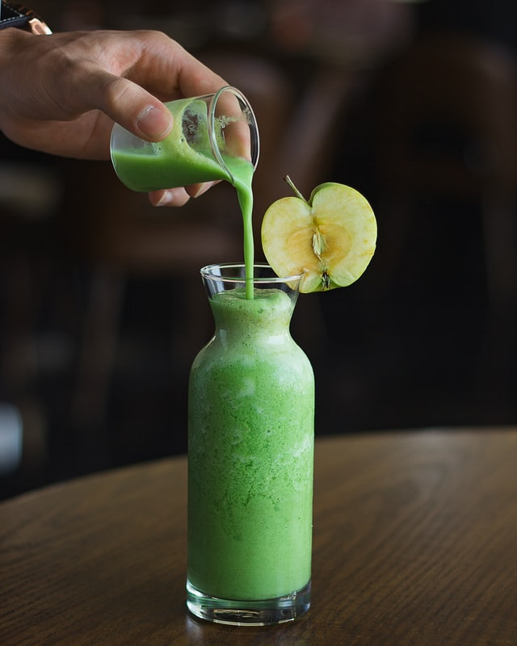

sssssssssssssssssssssssssssssss sssssssssssssssssssssssssssssss sssssssssssssssssssssssssssssss
중국 헝다그룹 위기감 커지자 리스크 확대증시 외국인 투자자 순매도 전환, 지수 하락[이데일리 이윤화 기자] 원·달러 환율이 2원 가량 올라 사흘 만에 1170원대를 회복했다. 나흘 만의 상승 전환이다. 이는 국내증시에서 외국인이 순매도로 전환하면서 코스피, 코스닥 지수를 끌어 내린데다 위안화가 약세로 전환하는 등의 영향이 컸다.
